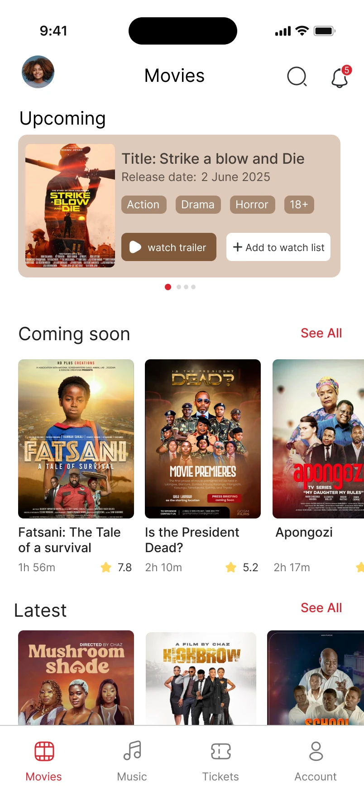
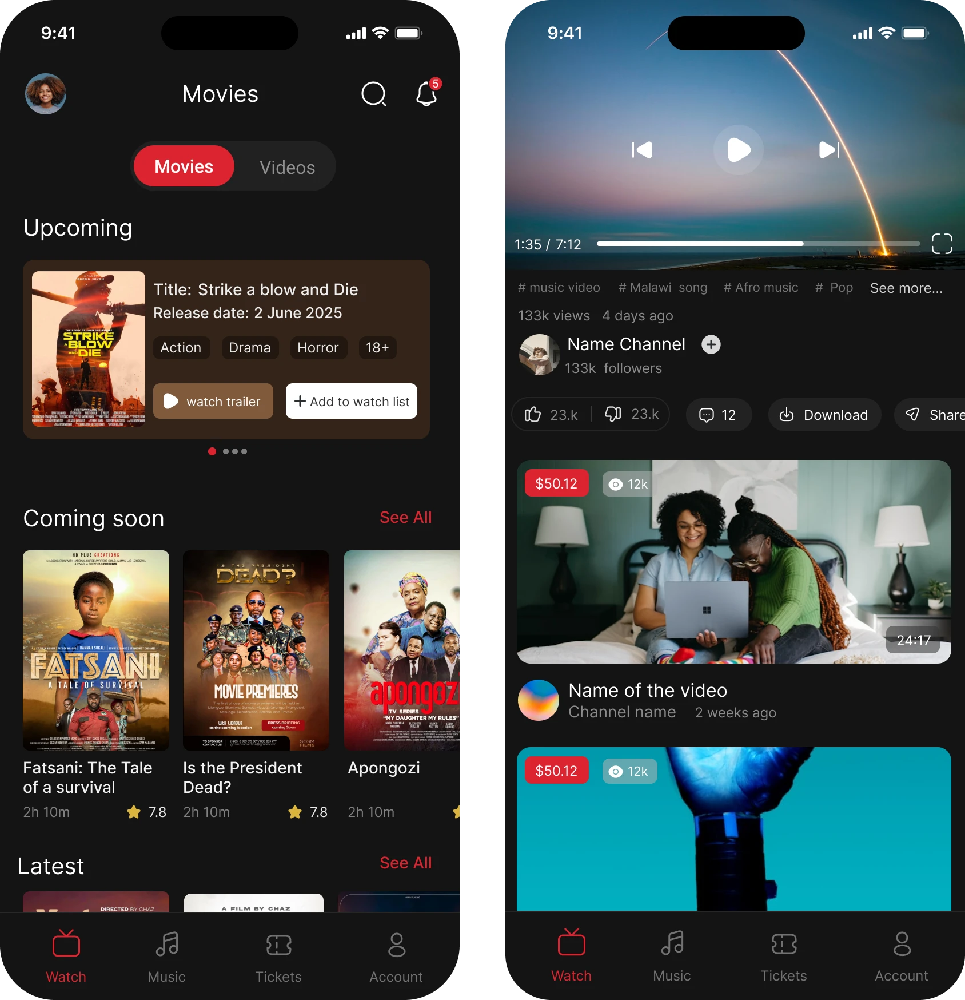
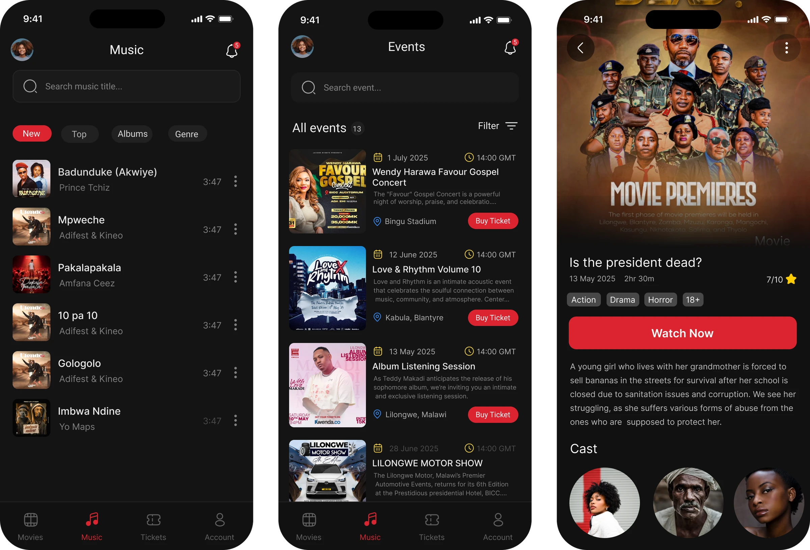
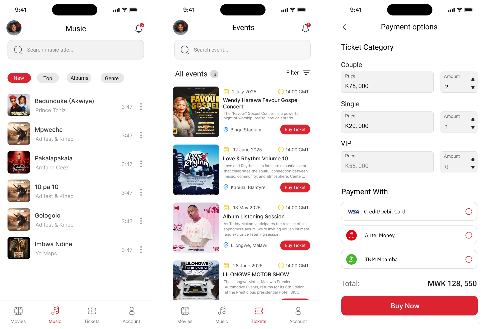
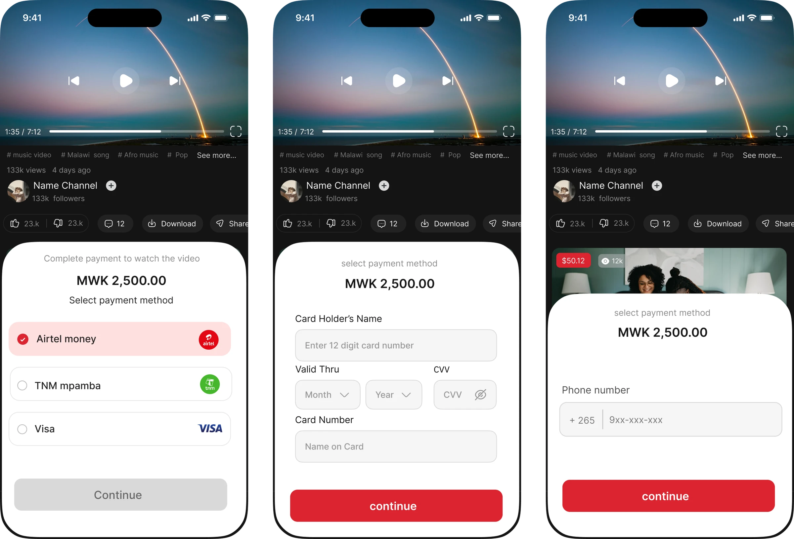
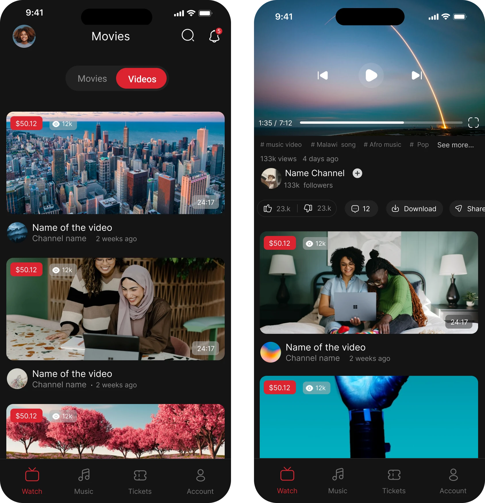

Case Study
My Role
I designed the user experience, created the visual interface, structured the screens, and implemented the app using React Native. My work covered key modules such as movies, music, videos, events, ticket selection, payment options, and user navigation.
Problem
The Malawian entertainment industry has many artists, event organizers, filmmakers, and content creators, but users often discover content and events through scattered platforms such as social media, WhatsApp posters, radio promotions, and word of mouth.
Key challenges identified:
- Users struggle to find music, videos, movies, and events in one place.
- Event ticket sales are often handled manually or through fragmented payment methods.
- Local artists and creators lack a centralized platform to showcase and monetize content.
- Users have limited access to structured entertainment content from Malawi.
- Event organizers need a more convenient way to promote events and sell tickets digitally.
Solution & Objectives
The solution was a mobile entertainment platform that brings together music, videos, events, movies, and ticket purchasing in one app.
The main objectives were to:
- Allow users to browse and watch video content.
- Enable users to discover and stream music.
- Showcase movies and entertainment content with rich detail pages.
- Promote events and allow users to buy tickets online.
- Support multiple ticket categories — Single Couple VIP.
- Provide local payment options: Airtel Money, TNM Mpamba, and card payments.
- Create a dark and modern entertainment feel suitable for streaming content.
- Build a scalable interface that could support more content categories in future.
Target User Persona
Chisomo enjoys discovering Malawian music, watching music videos, attending concerts, and following local artists. She often finds event posters on WhatsApp or Facebook but sometimes struggles to confirm ticket prices, payment options, and event details.
Goals
- Discover new Malawian music and videos.
- Watch entertainment content in one app.
- Find upcoming events easily.
- Buy tickets without physically visiting a selling point.
- Support local artists and creators.
- Access event details such as date, time, venue, and price.
Pain Points
- Event information is scattered across social media.
- Ticket buying can be inconvenient and manual.
- Hard to find one reliable platform for local entertainment.
- Payment methods are not always clear.
- Local content discovery is often unstructured.
User Workflow
The app workflow was designed around entertainment discovery and quick access to actions such as watching, listening, and buying tickets.
Wireframe & Structure
The structure was built around four main content areas: Movies, Music, Tickets, and Account.
Key screens included:
- Login & signup screens — User account access and onboarding.
- Movies screen — Content listing page for movie and video discovery.
- Video details screen — Streaming interface with controls, creator details, and related content.
- Music screen — Track listing with album art, artist names, duration, and quick actions.
- Events screen — Upcoming events with posters, dates, locations, and ticket purchase buttons.
- Movie details screen — Rating, genre, description, and cast.
- Payment screens — Bottom-sheet and full-page flows for video access and ticket purchases.
UI Design Direction
The UI used a bold entertainment interface with a strong focus on content, contrast, and action.
Key design decisions:
- Dark theme for video, movies, music, and event browsing — cinematic feel.
- Red accent colour for key actions: Watch Now, Buy Ticket, Buy Now.
- Bottom navigation for quick movement between Movies, Music, Tickets, and Account.
- Large media thumbnails to make content visually engaging.
- Clear event cards showing date, time, venue, and ticket CTA.
- Payment bottom sheets to keep users in context during checkout.
- Local payment options — Airtel Money and TNM Mpamba — for Malawian relevance.
Results
The project resulted in a working React Native mobile app design and implementation for Akometsi Company.
The final product demonstrated how Akometsi could:
- Centralize Malawian music, videos, movies, and events in one app.
- Give users a smoother way to discover local entertainment.
- Help artists and creators reach wider audiences.
- Support event organizers with online ticket selling.
- Reduce manual ticket sales through in-app payment options.
- Create a stronger digital entertainment brand for the Malawian market.
Challenges
One of the biggest challenges was combining several product experiences into one app: music, videos, movies, events, payments, and ticketing. Each section had different user needs, so the interface had to remain simple while supporting multiple actions.
- Designing an entertainment experience that did not feel cluttered.
- Balancing dark media screens with clear payment flows.
- Creating a consistent design system across music, video, movie, and ticket sections.
- Structuring ticket categories and payment options in a simple way.
- Implementing the designed screens in React Native while maintaining original visual quality.
- Making the app feel local through payment methods while keeping a modern global feel.
Reflection
Akometsi helped me grow as both a product designer and mobile developer. It challenged me to think beyond static screens and consider how design decisions translate into real implementation.
The biggest lesson was that entertainment platforms need more than beautiful visuals. They need clear content structure, simple navigation, fast access to actions, and trust in the payment journey.
Working on both the UI/UX and React Native implementation helped me understand the full product process — from idea and interface design to building usable screens. It also strengthened my ability to design for Malawi's creative industry, where platforms must support artists, event organizers, and audiences at the same time.